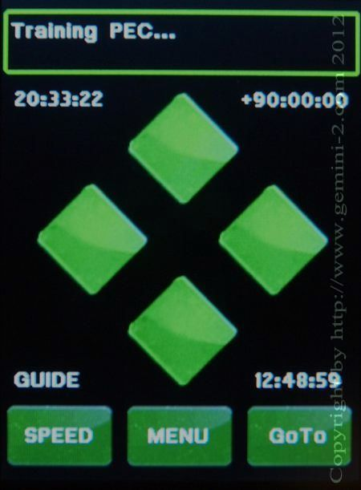

| Interactive Hand-Controller Menus - click on green button to Navigate |
|  |
It will take a moment for the "Training PEC" message to appear in the message window. Now once the "Training PEC" message appears, one of these have to happen for a PEC curve to be recorded and retained. Corrections to keep the star in the center of the scope have to be made either using this menu RA buttons, or with guider scope input. If no corrections are made, then the PEC curve will not be saved. This page will automatically go to the PEC Trained page in 15 seconds. Or if you prefer you can go to that page by clicking one of the four directional buttons, instead of waiting. |